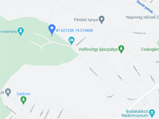

Budakalászi mészkõbánya

Rövid kõzetfizikai leírás:
Üröm és Budakalász községek között található forrásvízi mészkõbánya kõzetanyaga 2000 év
óta meghatározó jelentõségû szûkebb és tágabb környezetének építészeti kultúrájában.
Földtanilag a legfiatalabb képzõdmények közé tartozik, kora mindössze 800-900000 év között
van. A pleisztocén jégkorszak idején egy viszonylag hosszú és keskeny édesvizû tóban
keletkezett mészkõ. A tófenék forrásai sok oldott kalcium karbonátot hoztak felszínre . A
viszonylag nagy nyomásnál feltörõ langyos vizek az alacsony nyomású környezetbe kerülve
elvesztették CO2 tartalmuk jelentõs részét így felbomlott a kalcium-hidrokarbonát
egyensúlya és kivált a kalcium karbonát.A budakalászi mészkõ az évszakok változásáról is
információt ad. Nyáron lényegesen kevesebb lösz került a tóba, így a kõzet színe világos
elefántcsont színû. Télen a behordott homogén anyag jóval több, ami a keletkezõ mészkövet
világosbarnára színezi. A kõzet így válik kétszínûvé és veszik fel a rétegek a moduláló
vagy traverzáló formát. Ez a látvány csak akkor jön létre, ha a rétegzõdésre merõlegesen
vágják el a kõzetet, ha azzal párhuzamosan, akkor az egymással keveredõ színek felhõs
rajzolatot eredményeznek. Ilyenkor egyszerûen csak mészkõrõl beszélünk.A budakalászi bánya megnyitásának ideje Kr.u.92-93-ra tehetõ. A török hódoltság másfélszáz évétõl eltekintve a bánya folyamatosan üzemelt és üzemel napjainkig.
A budakeszi édesvízi mészkõ szilárdsága 100-125 N/mm2, jól faragható, vágható csiszolható, fényezhetõ. Vízfelvétele 0,3-3 v%, a kõzet igen idõtálló és fagyálló.
Termékek:
- lapravágott anyagból fal és padlõburkolatok, konyhapultok, párkányok,
- hasított, faragott "mediterrán" kövek, vágott és hasított felületû falburkoló kövek,
- hasított, rusztikus falburkoló kövek, kerti tipegõk - ciklopkövek és sziklakerti kövek
Üzemeltetõ: Stonemine Bányászati és Szolgáltató Kft.
Képek
{kind=link}
{kind=link}
{kind=link}
{kind=link}
{kind=link}
{kind=link}
{kind=link}
Linkek